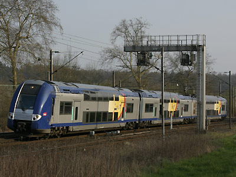

Z 24500 - 26500
TER 2N Nouvelle génération
Automoteurs à deux niveaux à motorisation répartie. Leur surnom TER 2N NG provient des Z 23500 "TER 2N" de première génération.
La composition des rames est variable : 3 caisses pour les Z24500, 4 ou 5 caisses pour les Z26500.
La numérotation des rames est particulière. Les 66 Z26500 sont numérotées dans les tranches 400 et 500, de 401 à 566. Le nombre dizaine+unité donne l'ordre de la rame dans la série et le chiffre de centaine le nombre de caisses. Les 145 Z24500 sont numérotées de 301 à 399, puis de 600 à 645.
Toutes ces automotrices ont été mises en service entre 2004 et 2010.
Répartition par régions :
Z 24500 : Rhône Alpes, Lorraine, Nord-Pas de Calais, Pays de la Loire
Z 26500 (4 caisses) : PACA+Monaco, Centre, Picardie
Z 26500 (5 caisses) : Haute-Normandie, Picardie (Axe Paris-Nord-Amiens-Lille)
Les missions
Les conseils régionaux possédant des TER 2N NG les ont mis en priorité sur les axes TER les plus chargés en omnibus ou semi-direct.
Les Z 24500 Lorraine sont utilisées avec les automotrices Luxembourgeoises 2200 de construction identique sur l'axe Métrolor Metz-Nancy-Thionville-Luxembourg.
Les rames Centre assurent des Paris-Chartres-Le Mans.
Les rames Nord-Pas de Calais sont déployées au départ de Lille-Flandres vers Lens, Béthune, Douai-Arras-Amiens, Valenciennes.
Les rames Rhône-Alpes sont visibles sur le sillon rhodanien entre Macon et Valence ou dans les Alpes vers Chambéry ou Grenoble.
Picardie les utilise sur Paris-Amiens-Lille et Paris Beauvais, PACA sur Marseille-Vintimille, Haute-Normandie sur Paris-Rouen-Le Havre, Pays de la Loire sur Tours-Le Croisic, Le Mans-Nantes, Le Mans-Laval.
Quelques données techniques
Constructeur : Alstom
Tension d'alimentation : continu 1,5 kV et monophasé 25 kV, 50 Hz
Chaîne de traction : onduleurs à transistors IGBT - Moteur asynchrones
Motorisation : 1 bogie bimoteur par caisse
Puissance totale : 850 kW par caisse, soit 2550 kW pour les Z 24500, 3400 kW (Z 26500 quadricaisses) ou 4250 kW (Z 26500 pentacaisses).
Marche en unités multiples entre eux et avec les Z 23500.
Pour plus d'info :
La fiche Z 24500 et Z 26500 sur Wikipedia
L'inventaire des Z 24500 et Z 26500 sur Trains du Sud-Ouest

La rame 330 Lorraine (04/04/2007)
La rame 606 Rhône Alpes (23/07/2011)
La rame 643 Pays de la Loire à Tours (24/05/2010)
La rame 2210 des CFL (04/04/2007)
La rame 638 Nord-Pas de Calais à Lens (28/10/2012)

La rame 432 région Centre (26563-26564) à Sèvres (23/06/2010)
La rame 502 Picardie aux Noues (30/07/2011)
La rame 558 Haute Normandie Paris St Lazare (30/07/2011)
La rame 441 Monaco à Cannes (10/06/2014)
La rame 394 "Rayon vert" dotée de panneaux photovoltaïques (31/07/2017)